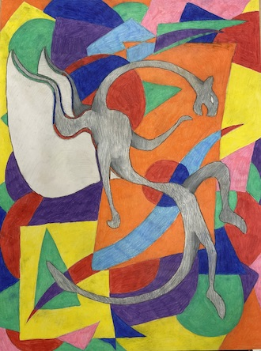
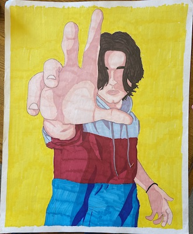

Colored Pencils / Markers
This was a school piece done of my sister using markers and going over that with colored pencils. I tried experimenting with some color with parts of the shading.

This was a school piece where we were supposed to make a scene that showed movement. This is my original character called Mr. Smiley.
This was a school piece of the doll I was scared of as a child who was under my grandparent's bed.
This was a school piece where we did an art trade. The person I go wanted a Qilin which was a legendary creature in Chinese Mythology.

This was a school piece where we had to make an abstract piece, so I decided to do a grey dragon of sorts in front of a bunch of vibrant colors.
This was a school piece and another abstract piece as well. This piece represents my and a few teammates of mine's jersey numbers for soccer. There is 74 (mine), 85, 14, and 2.

This as well was a school piece that was a forshortening project. I decided to draw myself which marker.